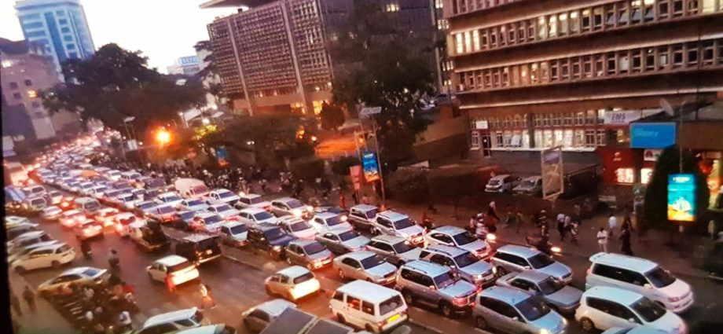

A simpler way around the city
Know your route.
Know your fare.
Explore everyday taxi and express journeys across Kampala, with clear route details and indicative fares in Ugandan shillings.
Browse all routesKampala to Entebbe Expressway
Find a place to board
Nearby stops and stages
Search a place to see nearby transit stops and local taxi stages.
Place searches are sent to OpenStreetMap’s Nominatim service. Do not search for private or sensitive addresses.
Map centered on Kampala. Search a place to find nearby stops.
Nearby stops
Saved routes
Saved stages
Stop details
Select a map marker or stage to see its details.
Transit data settings
Transitland requires an API key. Add a restricted key to load nearby feed stops. It stays in this browser and is sent with public browser requests; use a key restricted for this project.
Transitland API documentationMap tiles and place search: © OpenStreetMap contributors. Transit stop data: Transitland. Local taxi route data is an indicative community dataset.
Find a journey
Routes at a glance
Loading routes...
Plan before you board
A little clarity
goes a long way.
Compare route details, check typical operating hours, and send a fare question in one place.
Estimate a fare
Fare ranges and route distances are indicative community estimates, not an official price list. Peak and luggage adjustments are planning assumptions. Confirm current fares and boarding points locally.